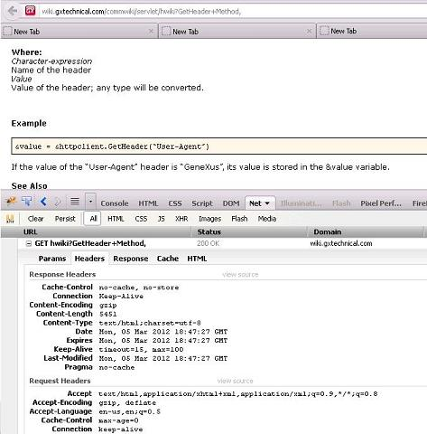

Returns the value of a header converted to the variable type. SyntaxValue = &DataType.GetHeader(Character-expression) Example&value = &httpclient.GetHeader(“User-Agent”) If the value of the “User-Agent” header is “GeneXus”, its value is stored in the &value variable. ExampleIn the example shown in the image you can see the Response and Request headers of this article you are reading.  ScopeExtended Data Types: HttpClient, HttpRequest See AlsoHttpClient Data Type More Details
|
| Backlinks | |
| HttpClient data type | HttpRequest data type |